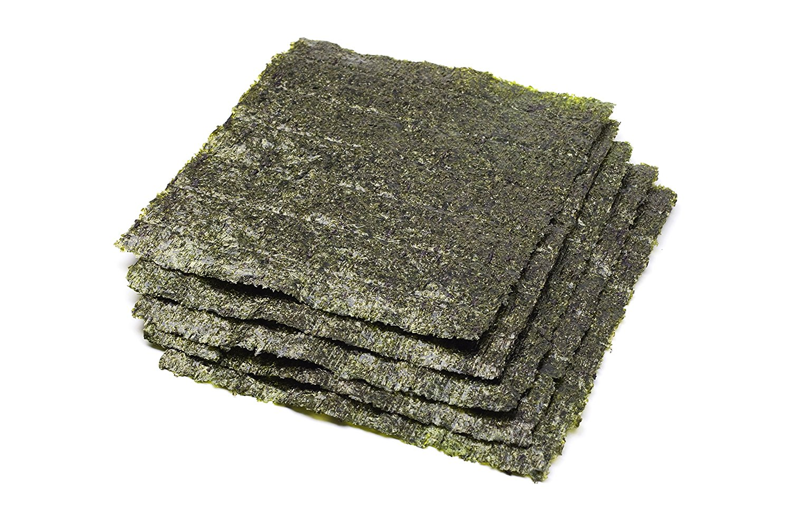

Nori

Nori is my own custom responsive css file. It's what styles this website. I created it
to better understand responsive web design and to start making a website that allows me
to experment with different type. Nori (海苔) is the Japanese name for a species
of edible seaweed that is used to wrap sushi.